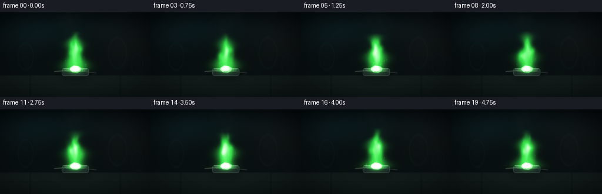
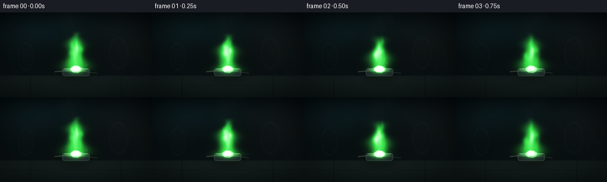
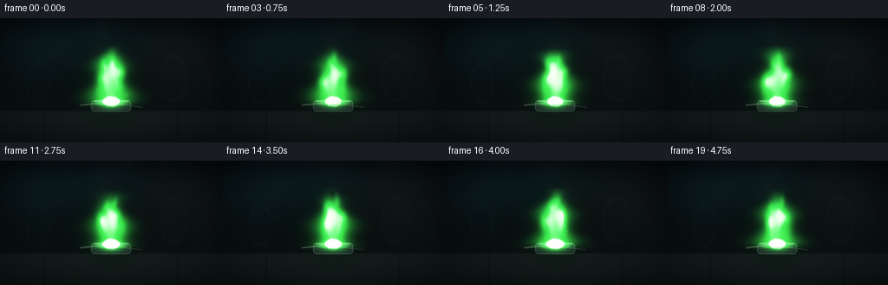
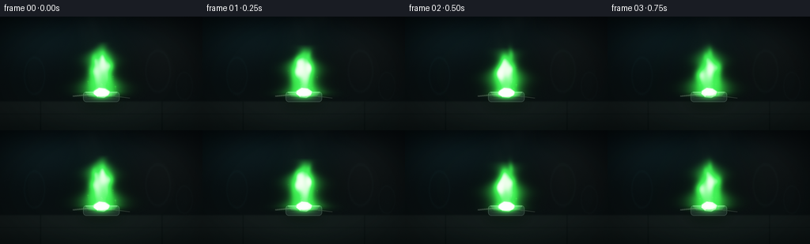

CODING AGENTS AS PIXEL WORLD MODELS
traex/DeepSeek-V4.1-Flash · material_0007
点击播放 · 原生 RGB 像素
逐轮保存的候选
回放视频、检查图与代码变化。
每份候选均可单独播放。实际图片检查记录在下方工具轨迹中。
候选 01播放与检查图
点击播放 · 原生 RGB 像素


展开代码变化
--- 上一保存版本
+++ 本次保存版本
@@ -0,0 +1,324 @@
+from pathlib import Path
+
+import numpy as np
+from PIL import Image, ImageDraw, ImageFilter
+from scipy.ndimage import gaussian_filter
+
+import artifact_io
+
+
+ROOT = Path(__file__).resolve().parent
+WIDTH, HEIGHT = 256, 144
+FRAMES = 20
+FPS = 4.0
+SCALE = 4
+IW, IH = WIDTH * SCALE, HEIGHT * SCALE
+
+
+def smoothstep(a, b, x):
+ t = np.clip((x - a) / (b - a), 0.0, 1.0)
+ return t * t * (3.0 - 2.0 * t)
+
+
+def make_grid():
+ yy, xx = np.mgrid[0:IH, 0:IW].astype(np.float32)
+ return xx / SCALE, yy / SCALE
+
+
+XX, YY = make_grid()
+U = XX / WIDTH
+V = YY / HEIGHT
+
+
+def background():
+ """Quiet, slightly out-of-focus lab backdrop with a ceramic work surface."""
+ top = np.array([3.0, 7.0, 9.0], dtype=np.float32)
+ bottom = np.array([11.0, 18.0, 19.0], dtype=np.float32)
+ t = np.clip(V, 0, 1)[..., None]
+ img = top + (bottom - top) * t
+
+ # Very soft pools of light suggest a dark lab without stealing focus.
+ pools = (
+ (0.18, 0.24, 0.35, 0.36, np.array([5.0, 11.0, 12.0])),
+ (0.82, 0.30, 0.30, 0.42, np.array([9.0, 8.0, 7.0])),
+ (0.50, 0.18, 0.52, 0.25, np.array([3.0, 8.0, 9.0])),
+ )
+ for cx, cy, sx, sy, color in pools:
+ g = np.exp(-(((U - cx) / sx) ** 2 + ((V - cy) / sy) ** 2) * 1.7)
+ img += g[..., None] * color
+
+ # Glassware silhouettes in the distance, intentionally defocused.
+ for cx, cy, rw, rh, tint in (
+ (0.17, 0.52, 0.050, 0.16, (2.5, 7.0, 7.0)),
+ (0.78, 0.48, 0.060, 0.18, (4.0, 6.5, 6.0)),
+ (0.91, 0.61, 0.040, 0.12, (3.0, 5.0, 5.0)),
+ ):
+ d = ((U - cx) / rw) ** 2 + ((V - cy) / rh) ** 2
+ edge = np.exp(-((np.sqrt(d) - 1.0) / 0.08) ** 2)
+ fill = np.clip(1.0 - d, 0.0, 1.0) * 0.12
+ img += (edge * 0.55 + fill)[..., None] * np.array(tint)
+
+ # Work surface: a dark, matte ceramic tile.
+ table = smoothstep(0.735, 0.755, V)
+ surface = np.zeros_like(img)
+ surface += np.array([10.0, 17.0, 17.0], dtype=np.float32)
+ surface += (np.exp(-((V - 0.79) / 0.16) ** 2) * 7.0)[..., None]
+ surface += np.exp(-((U - 0.50) / 0.44) ** 2)[..., None] * np.array([2.0, 3.0, 2.5])
+ # Fine tile seams.
+ seam = (
+ np.exp(-((U - 0.20) / 0.0035) ** 2)
+ + np.exp(-((U - 0.80) / 0.0035) ** 2)
+ + np.exp(-((V - 0.855) / 0.0030) ** 2)
+ )
+ surface -= (seam * 5.0)[..., None]
+ img = img * (1.0 - table[..., None]) + surface * table[..., None]
+
+ # Subtle film-like grain keeps the dark areas from banding.
+ rng = np.random.default_rng(7)
+ grain = rng.normal(0.0, 0.65, (IH, IW, 1)).astype(np.float32)
+ img += grain
+ return img
+
+
+def draw_stand_and_sample(img):
+ """Draw a heatproof stand and a small, faceted barium specimen."""
+ canvas = Image.fromarray(np.clip(img, 0, 255).astype(np.uint8))
+ d = ImageDraw.Draw(canvas, "RGBA")
+
+ def s(v):
+ return int(round(v * SCALE))
+
+ # Soft shadow on the tile.
+ shadow = Image.new("RGBA", (IW, IH), (0, 0, 0, 0))
+ sd = ImageDraw.Draw(shadow)
+ sd.ellipse((s(104), s(102), s(152), s(113)), fill=(0, 0, 0, 165))
+ sd.ellipse((s(113), s(99), s(143), s(108)), fill=(0, 0, 0, 90))
+ shadow = shadow.filter(ImageFilter.GaussianBlur(7 * SCALE))
+ canvas = Image.alpha_composite(canvas.convert("RGBA"), shadow)
+ d = ImageDraw.Draw(canvas, "RGBA")
+
+ # Low ceramic combustion block.
+ d.rounded_rectangle(
+ (s(105), s(95), s(151), s(108)),
+ radius=s(4),
+ fill=(27, 37, 37, 255),
+ outline=(57, 70, 67, 255),
+ width=s(0.8),
+ )
+ d.polygon(
+ [(s(108), s(96)), (s(148), s(96)), (s(144), s(101)), (s(112), s(101))],
+ fill=(42, 54, 51, 255),
+ )
+ d.line((s(108), s(96), s(148), s(96)), fill=(99, 111, 103, 220), width=s(0.7))
+ d.line((s(110), s(102), s(146), s(102)), fill=(15, 22, 23, 220), width=s(0.7))
+
+ # Thin metal support rods.
+ d.line((s(92), s(101), s(124), s(98)), fill=(61, 69, 66, 255), width=s(1.0))
+ d.line((s(92), s(100), s(124), s(97)), fill=(123, 129, 117, 210), width=s(0.45))
+ d.line((s(132), s(99), s(164), s(103)), fill=(48, 55, 52, 255), width=s(0.9))
+
+ # Barium chunk: irregular silver-white facets with a green reflected rim.
+ pts = [
+ (119, 94), (125, 90), (133, 91), (139, 95), (137, 100),
+ (131, 103), (123, 102), (118, 98),
+ ]
+ d.polygon([(s(x), s(y)) for x, y in pts], fill=(118, 126, 116, 255))
+ facets = [
+ ([(119, 94), (125, 90), (128, 96), (123, 102), (118, 98)], (165, 174, 158)),
+ ([(125, 90), (133, 91), (132, 97), (128, 96)], (197, 205, 181)),
+ ([(133, 91), (139, 95), (137, 100), (132, 97)], (132, 145, 128)),
+ ([(128, 96), (132, 97), (131, 103), (123, 102)], (95, 109, 98)),
+ ]
+ for poly, color in facets:
+ d.polygon([(s(x), s(y)) for x, y in poly], fill=color + (255,))
+ d.line([(s(x), s(y)) for x, y in pts + [pts[0]]], fill=(48, 62, 54, 255), width=s(0.65))
+ d.line((s(120), s(95), s(126), s(91), s(133), s(92)), fill=(215, 222, 194, 220), width=s(0.5))
+ d.line((s(126), s(97), s(132), s(98)), fill=(73, 97, 74, 220), width=s(0.6))
+
+ return np.asarray(canvas.convert("RGB"), dtype=np.float32)
+
+
+def flame_field(t):
+ """A layered, upward-advecting green flame with a hot white base."""
+ phase = 2.0 * np.pi * t
+ # Normalized local coordinates around the specimen.
+ x = (XX - 128.0) / 29.0
+ y = (99.0 - YY) / 53.0
+ yy = np.clip(y, 0.0, 1.65)
+
+ # Flame column bends and narrows as it rises.
+ bend = 0.045 * np.sin(phase * 0.78 + yy * 5.6) + 0.018 * np.sin(phase * 1.55 + yy * 11.0)
+ bend += 0.012 * np.sin(phase * 0.41 - yy * 3.1)
+ xb = x - bend * yy
+ width = 0.54 * (1.0 - 0.50 * yy) + 0.10 * np.sin(phase * 1.3 + yy * 9.0)
+ width = np.clip(width, 0.17, 0.62)
+ body = np.exp(-((xb / width) ** 2) * 1.45)
+ body *= smoothstep(-0.08, 0.10, y)
+ body *= np.clip(1.0 - smoothstep(0.66, 1.22, y + 0.07 * np.sin(phase + yy * 4.0)), 0.0, 1.0)
+
+ # Wispy tongues: several offset, rising lobes.
+ tongues = np.zeros_like(body)
+ for i, (off, start, end, amp, freq) in enumerate((
+ (-0.17, 0.12, 0.97, 0.23, 7.5),
+ (0.13, 0.18, 1.06, 0.20, 8.8),
+ (-0.03, 0.27, 1.19, 0.18, 10.3),
+ (0.25, 0.09, 0.78, 0.14, 6.2),
+ (-0.29, 0.08, 0.71, 0.13, 5.8),
+ )):
+ cy = start + (end - start) * (0.48 + 0.06 * np.sin(phase * 0.9 + i))
+ sx = 0.19 + 0.035 * np.sin(phase * 1.17 + i * 1.8)
+ sy = 0.28 + 0.05 * np.cos(phase * 0.73 + i)
+ tongue = np.exp(-(((xb - off - 0.12 * np.sin(phase + i)) / sx) ** 2 + ((y - cy) / sy) ** 2) * 1.8)
+ tongue *= smoothstep(start - 0.10, start + 0.08, y)
+ tongue *= 1.0 - smoothstep(end - 0.10, end + 0.10, y)
+ tongues += tongue * amp * (0.82 + 0.18 * np.sin(phase * freq + i))
+
+ # Curling tongues that peel away from the main column.
+ for i, (cx, cy, sx, sy, amp) in enumerate((
+ (-0.28, 0.53, 0.19, 0.15, 0.22),
+ (0.27, 0.67, 0.17, 0.13, 0.20),
+ (-0.12, 0.83, 0.13, 0.15, 0.15),
+ (0.10, 0.93, 0.10, 0.14, 0.12),
+ )):
+ dx = xb - cx - 0.08 * np.sin(phase * 0.9 + i * 2.0)
+ dy = y - cy - 0.04 * np.cos(phase * 0.7 + i)
+ tongues += amp * np.exp(-((dx / sx) ** 2 + (dy / sy) ** 2) * 1.9)
+
+ # A small blue-white ignition collar around the metal.
+ base = np.exp(-(((x / 0.39) ** 2 + ((y - 0.02) / 0.105) ** 2)) * 1.8)
+ base *= 0.75 + 0.25 * np.sin(phase * 2.3)
+ flame = np.clip(body * 0.72 + tongues + base * 0.82, 0.0, 2.0)
+ return flame, base, x, y, yy
+
+
+def smoke_field(t):
+ """Cool grey smoke above the flame, with gentle, coherent motion."""
+ phase = 2.0 * np.pi * t
+ x = (XX - 128.0) / 64.0
+ y = (100.0 - YY) / 70.0
+ y = np.clip(y, -0.2, 1.8)
+ drift = 0.08 * np.sin(phase * 0.53) + 0.035 * np.sin(phase * 1.1)
+ xw = x - drift * y
+ column = np.exp(-((xw - 0.16 * np.sin(phase * 0.44 + y * 4.0)) / (0.14 + 0.13 * y)) ** 2)
+ column *= smoothstep(0.63, 0.88, y) * (1.0 - smoothstep(1.25, 1.75, y))
+ wisps = (
+ 0.55 * np.exp(-(((xw + 0.22 - 0.08 * np.sin(phase + y * 3.0)) / 0.25) ** 2 + ((y - 1.20) / 0.24) ** 2) * 1.5)
+ + 0.40 * np.exp(-(((xw - 0.28 + 0.06 * np.cos(phase + y * 2.5)) / 0.21) ** 2 + ((y - 1.42) / 0.20) ** 2) * 1.7)
+ + 0.24 * np.exp(-(((xw - 0.03) / 0.34) ** 2 + ((y - 1.62) / 0.22) ** 2) * 1.8)
+ )
+ smoke = np.clip(column * 0.45 + wisps * 0.34, 0.0, 1.0)
+ # Break the plume into soft, uneven ribbons.
+ smoke *= 0.74 + 0.26 * np.sin(phase * 0.8 + xw * 11.0 + y * 5.0) ** 2
+ return smoke
+
+
+def sparks(t):
+ """Deterministic ember particles, each with a short glowing trail."""
+ rng = np.random.default_rng(31)
+ count = 22
+ start_x = rng.normal(128.0, 10.0, count)
+ start_y = rng.uniform(91.0, 101.0, count)
+ speed = rng.uniform(20.0, 62.0, count)
+ sway = rng.uniform(-7.0, 7.0, count)
+ phase = rng.uniform(0.0, 2.0 * np.pi, count)
+ life = rng.uniform(0.65, 1.25, count)
+ # Stagger the particles so the field stays alive over the five seconds.
+ birth = rng.uniform(-0.9, 0.95, count)
+ time = (t + birth) % life
+ age = time / life
+ px = start_x + sway * age + 5.0 * np.sin(phase + age * 7.0) * age
+ py = start_y - speed * age
+ radius = 0.45 + 0.85 * (1.0 - age)
+ intensity = (1.0 - age) ** 1.5
+
+ field = np.zeros((IH, IW), dtype=np.float32)
+ for i in range(count):
+ # Draw the current particle and a faint downward trail.
+ for trail in range(3):
+ yy = py[i] + trail * (1.7 + 2.0 * age[i])
+ xx = px[i] + 0.35 * trail * np.sin(phase[i] + age[i] * 3.0)
+ rr = radius[i] * (1.0 - 0.18 * trail)
+ a = intensity[i] * (0.55 ** trail)
+ g = np.exp(-(((XX - xx) ** 2 + (YY - yy) ** 2) / (rr * rr)) * 1.8)
+ field = np.maximum(field, g * a)
+ return field
+
+
+def render_frame(index):
+ t = index / FPS
+ img = background()
+ img = draw_stand_and_sample(img)
+ flame, base, x, y, yy = flame_field(t)
+ smoke = smoke_field(t)
+
+ # Smoke is visible mainly above the flame and has a slight warm underlight.
+ smoke_col = np.array([28.0, 38.0, 38.0], dtype=np.float32)
+ warm_under = np.clip(flame, 0.0, 1.0)[..., None] * np.array([3.0, 7.0, 4.0])
+ img = img * (1.0 - 0.34 * smoke[..., None]) + smoke_col * (0.34 * smoke[..., None])
+ img += warm_under * smoke[..., None]
+
+ # Build the flame as a small set of colored emission layers.
+ core = np.clip(flame, 0.0, 1.8)
+ green = np.clip(0.86 * core + 0.48 * np.sqrt(np.maximum(core, 0.0)), 0.0, 1.35)
+ white_hot = np.clip((core - 0.68) * 1.9 + base * 1.2, 0.0, 1.5)
+ flame_rgb = np.zeros((IH, IW, 3), dtype=np.float32)
+ flame_rgb[..., 0] = 42.0 * green + 188.0 * white_hot
+ flame_rgb[..., 1] = 205.0 * green + 225.0 * white_hot
+ flame_rgb[..., 2] = 52.0 * green + 156.0 * white_hot
+ flame_rgb += (green[..., None] * np.array([9.0, 25.0, 8.0]))
+
+ # Additive flame and a soft green halo around it.
+ img += flame_rgb
+ halo = gaussian_filter(np.clip(flame, 0.0, 1.0), 11.0 * SCALE)
+ halo2 = gaussian_filter(np.clip(flame, 0.0, 1.0), 30.0 * SCALE)
+ img += halo[..., None] * np.array([5.0, 30.0, 9.0])
+ img += halo2[..., None] * np.array([3.0, 13.0, 4.0])
+
+ # Sparse embers, warm at the source and green as they cool.
+ spark = sparks(t)
+ img += spark[..., None] * np.array([18.0, 56.0, 12.0])
+ img += gaussian_filter(spark, 2.5 * SCALE)[..., None] * np.array([2.0, 11.0, 3.0])
+
+ # A restrained local glow on the ceramic and the metal support.
+ local_glow = gaussian_filter(np.clip(flame, 0.0, 1.0), 18.0 * SCALE)
+ img += local_glow[..., None] * np.array([2.0, 9.0, 3.0])
+
+ # Gentle lens vignette and very subtle exposure breathing.
+ r = np.sqrt(((U - 0.5) / 0.68) ** 2 + ((V - 0.5) / 0.74) ** 2)
+ vignette = 1.0 - 0.23 * smoothstep(0.48, 1.0, r)
+ exposure = 1.0 + 0.012 * np.sin(2.0 * np.pi * t * 0.9 + 0.5)
+ img *= vignette[..., None] * exposure
+
+ # Highlight rolloff gives the small flame a photographic, non-clipped edge.
+ img = np.where(img > 190.0, 190.0 + 65.0 * (1.0 - np.exp(-(img - 190.0) / 65.0)), img)
+ img = np.clip(img, 0.0, 255.0)
+ small = Image.fromarray(img.astype(np.uint8)).resize(
+ (WIDTH, HEIGHT), Image.Resampling.LANCZOS
+ )
+ return np.asarray(small, dtype=np.uint8)
+
+
+def main():
+ frames = np.stack([render_frame(i) for i in range(FRAMES)], axis=0)
+ artifact_io.save(frames, ROOT)
+
+ # Also provide a browser-friendly animation for quick human inspection.
+ try:
+ import cv2
+
+ writer = cv2.VideoWriter(
+ str(ROOT / "video.mp4"),
+ cv2.VideoWriter_fourcc(*"mp4v"),
+ FPS,
+ (WIDTH, HEIGHT),
+ )
+ if writer.isOpened():
+ for frame in frames:
+ writer.write(cv2.cvtColor(frame, cv2.COLOR_RGB2BGR))
+ writer.release()
+ except Exception:
+ pass
+
+
+if __name__ == "__main__":
+ main()
候选 02播放与检查图
点击播放 · 原生 RGB 像素


展开代码变化
--- 上一保存版本
+++ 本次保存版本
@@ -150,8 +150,8 @@
bend = 0.045 * np.sin(phase * 0.78 + yy * 5.6) + 0.018 * np.sin(phase * 1.55 + yy * 11.0)
bend += 0.012 * np.sin(phase * 0.41 - yy * 3.1)
xb = x - bend * yy
- width = 0.54 * (1.0 - 0.50 * yy) + 0.10 * np.sin(phase * 1.3 + yy * 9.0)
- width = np.clip(width, 0.17, 0.62)
+ width = 0.68 * (1.0 - 0.46 * yy) + 0.10 * np.sin(phase * 1.3 + yy * 9.0)
+ width = np.clip(width, 0.20, 0.72)
body = np.exp(-((xb / width) ** 2) * 1.45)
body *= smoothstep(-0.08, 0.10, y)
body *= np.clip(1.0 - smoothstep(0.66, 1.22, y + 0.07 * np.sin(phase + yy * 4.0)), 0.0, 1.0)
@@ -159,15 +159,15 @@
# Wispy tongues: several offset, rising lobes.
tongues = np.zeros_like(body)
for i, (off, start, end, amp, freq) in enumerate((
- (-0.17, 0.12, 0.97, 0.23, 7.5),
- (0.13, 0.18, 1.06, 0.20, 8.8),
- (-0.03, 0.27, 1.19, 0.18, 10.3),
- (0.25, 0.09, 0.78, 0.14, 6.2),
- (-0.29, 0.08, 0.71, 0.13, 5.8),
+ (-0.20, 0.12, 1.02, 0.31, 7.5),
+ (0.18, 0.18, 1.10, 0.28, 8.8),
+ (-0.03, 0.27, 1.24, 0.25, 10.3),
+ (0.29, 0.09, 0.83, 0.20, 6.2),
+ (-0.33, 0.08, 0.76, 0.19, 5.8),
)):
cy = start + (end - start) * (0.48 + 0.06 * np.sin(phase * 0.9 + i))
- sx = 0.19 + 0.035 * np.sin(phase * 1.17 + i * 1.8)
- sy = 0.28 + 0.05 * np.cos(phase * 0.73 + i)
+ sx = 0.23 + 0.040 * np.sin(phase * 1.17 + i * 1.8)
+ sy = 0.30 + 0.05 * np.cos(phase * 0.73 + i)
tongue = np.exp(-(((xb - off - 0.12 * np.sin(phase + i)) / sx) ** 2 + ((y - cy) / sy) ** 2) * 1.8)
tongue *= smoothstep(start - 0.10, start + 0.08, y)
tongue *= 1.0 - smoothstep(end - 0.10, end + 0.10, y)
@@ -175,19 +175,19 @@
# Curling tongues that peel away from the main column.
for i, (cx, cy, sx, sy, amp) in enumerate((
- (-0.28, 0.53, 0.19, 0.15, 0.22),
- (0.27, 0.67, 0.17, 0.13, 0.20),
- (-0.12, 0.83, 0.13, 0.15, 0.15),
- (0.10, 0.93, 0.10, 0.14, 0.12),
+ (-0.36, 0.53, 0.23, 0.18, 0.30),
+ (0.34, 0.67, 0.21, 0.16, 0.27),
+ (-0.18, 0.85, 0.17, 0.17, 0.21),
+ (0.13, 0.96, 0.14, 0.16, 0.17),
)):
dx = xb - cx - 0.08 * np.sin(phase * 0.9 + i * 2.0)
dy = y - cy - 0.04 * np.cos(phase * 0.7 + i)
tongues += amp * np.exp(-((dx / sx) ** 2 + (dy / sy) ** 2) * 1.9)
# A small blue-white ignition collar around the metal.
- base = np.exp(-(((x / 0.39) ** 2 + ((y - 0.02) / 0.105) ** 2)) * 1.8)
+ base = np.exp(-(((x / 0.47) ** 2 + ((y - 0.02) / 0.115) ** 2)) * 1.8)
base *= 0.75 + 0.25 * np.sin(phase * 2.3)
- flame = np.clip(body * 0.72 + tongues + base * 0.82, 0.0, 2.0)
+ flame = np.clip(body * 0.78 + tongues * 1.15 + base * 1.05, 0.0, 2.0)
return flame, base, x, y, yy
@@ -259,8 +259,8 @@
# Build the flame as a small set of colored emission layers.
core = np.clip(flame, 0.0, 1.8)
- green = np.clip(0.86 * core + 0.48 * np.sqrt(np.maximum(core, 0.0)), 0.0, 1.35)
- white_hot = np.clip((core - 0.68) * 1.9 + base * 1.2, 0.0, 1.5)
+ green = np.clip(0.90 * core + 0.58 * np.sqrt(np.maximum(core, 0.0)), 0.0, 1.55)
+ white_hot = np.clip((core - 0.72) * 2.1 + base * 1.35, 0.0, 1.65)
flame_rgb = np.zeros((IH, IW, 3), dtype=np.float32)
flame_rgb[..., 0] = 42.0 * green + 188.0 * white_hot
flame_rgb[..., 1] = 205.0 * green + 225.0 * white_hot
@@ -271,8 +271,8 @@
img += flame_rgb
halo = gaussian_filter(np.clip(flame, 0.0, 1.0), 11.0 * SCALE)
halo2 = gaussian_filter(np.clip(flame, 0.0, 1.0), 30.0 * SCALE)
- img += halo[..., None] * np.array([5.0, 30.0, 9.0])
- img += halo2[..., None] * np.array([3.0, 13.0, 4.0])
+ img += halo[..., None] * np.array([7.0, 39.0, 11.0])
+ img += halo2[..., None] * np.array([4.0, 17.0, 5.0])
# Sparse embers, warm at the source and green as they cool.
spark = sparks(t)
可观测工具轨迹
实际执行的命令与返回图片。
命令 1exit 0
/bin/bash -lc "pwd && rg --files -g '"'!*.mp4'"' -g '"'!*.mov'"' -g '"'!*.png'"' -g '"'!*.jpg'"' -g '"'!*.jpeg'"' | sort"
命令 2exit 0
/bin/bash -lc "sed -n '1,240p' prompt.txt"
命令 3exit 0
/bin/bash -lc "sed -n '1,280p' GENERATION_RULES.md"
命令 4exit 0
/bin/bash -lc 'cat task_spec.json'
命令 5exit 0
/bin/bash -lc "sed -n '1,280p' artifact_io.py"
命令 6exit 0
/bin/bash -lc "sed -n '1,240p' player_template.html"
命令 7exit 0
/bin/bash -lc "python - <<'PY' import importlib.util for m in ['numpy','PIL','imageio','cv2','scipy']: print(m, bool(importlib.util.find_spec(m))) PY ffmpeg -version | head -n 1"
命令 8exit 1
/bin/bash -lc 'python generate.py'
命令 9exit 0
/bin/bash -lc 'python generate.py'
命令 10exit 0
/bin/bash -lc 'ls -lh inspection.png transition_check.png pixels.npz frames/00.png frames/19.png video.mp4 index.html'
命令 11exit 0
/bin/bash -lc "python - <<'PY'
from PIL import Image
import numpy as np
im=Image.open('inspection.png')
print(im.size)
# Print per-frame mean brightness and unique colors.
arr=np.stack([np.array(Image.open(f'frames/{i:02d}.png')) for i in range(20)])
for i in [0,4,9,14,19]:
a=arr[i].astype(float)
print(i, 'mean', a.mean(axis=(0,1)).round(2), 'green_frac', ((a[:,:,1]>a[:,:,0]*1.15)&(a[:,:,1]>60)).mean().round(4), 'range', a.min(), a.max())
print('temporal mean abs delta', np.abs(arr[1:].astype(float)-arr[:-1].astype(float)).mean().round(3))
PY"命令 12exit 0
/bin/bash -lc "python - <<'PY'
from PIL import Image
import numpy as np
for fi in [0,5,10,15,19]:
a=np.array(Image.open(f'frames/{fi:02d}.png')).astype(float)
# 4x3 block average -> 64x48 chars, classify
a=a.reshape(48,3,64,4,3).mean((1,3))
print('\\nFRAME',fi)
for row in a:
s=''
for r,g,b in row:
lum=.3*r+.6*g+.1*b
if g>r*1.4 and g>65 and lum>100: c='G'
elif g>r*1.2 and g>35: c='g'
elif lum>160: c='W'
elif lum>95: c='+'
elif lum>50: c='-'
elif lum>25: c='.'
else: c=' '
s+=c
print(s)
PY"命令 13exit 0
/bin/bash -lc 'python generate.py'
命令 14exit 0
/bin/bash -lc "python - <<'PY'
from PIL import Image
import numpy as np
arr=np.stack([np.array(Image.open(f'frames/{i:02d}.png')) for i in range(20)])
print('shape', arr.shape, arr.dtype)
for i in [0,5,10,15,19]:
a=arr[i].astype(float)
print(i, 'mean', a.mean(axis=(0,1)).round(2), 'green_frac', ((a[:,:,1]>a[:,:,0]*1.15)&(a[:,:,1]>60)).mean().round(4), 'max', a.max())
print('temporal MAD', np.abs(arr[1:].astype(float)-arr[:-1].astype(float)).mean().round(3))
# bounding box of green flame pixels
for i in [0,9,19]:
m=(arr[i,:,:,1].astype(float)>arr[i,:,:,0]*1.15)&(arr[i,:,:,1]>65)
ys,xs=np.where(m)
print('bbox',i,(xs.min(),ys.min(),xs.max(),ys.max()),'centroid',(xs.mean().round(1),ys.mean().round(1)))
PY"命令 15exit 0
/bin/bash -lc 'command -v chafa || command -v viu || command -v jp2 || command -v img2txt || true'
命令 16exit 0
/bin/bash -lc "python - <<'PY'
import cv2
from pathlib import Path
cap=cv2.VideoCapture('video.mp4')
print('opened',cap.isOpened(),'frames',int(cap.get(cv2.CAP_PROP_FRAME_COUNT)),'size',int(cap.get(cv2.CAP_PROP_FRAME_WIDTH)),int(cap.get(cv2.CAP_PROP_FRAME_HEIGHT)),'fps',cap.get(cv2.CAP_PROP_FPS))
cap.release()
PY"命令 17exit 0
/bin/bash -lc "python - <<'PY'
from pathlib import Path
import hashlib, numpy as np, json
from PIL import Image
files=sorted(Path('frames').glob('*.png'))
assert len(files)==20
ims=[np.array(Image.open(p)) for p in files]
assert all(a.shape==(144,256,3) and a.dtype==np.uint8 for a in ims)
# Ensure frame 0 is not a duplicate of frame 19 and that no blank frame exists.
assert not np.array_equal(ims[0], ims[-1])
assert min(a.mean() for a in ims)>5
with np.load('pixels.npz') as z:
p=z['pixels']
assert p.shape==(144,256,20) and p.dtype==np.uint32
# packed tensor must match RGB PNG frames
for i,a in enumerate(ims):
packed=(a[:,:,0].astype(np.uint32)<<16)|(a[:,:,1].astype(np.uint32)<<8)|a[:,:,2]
assert np.array_equal(p[:,:,i],packed)
print('validated: 20 RGB frames, 256x144, unique start/end, pixel payload matches')
print('sha256 frames',hashlib.sha256(b''.join(p.read_bytes() for p in files)).hexdigest()[:20])
print('artifact files',len(list(Path('.').iterdir())))
PY"保存候选 2 份；完成命令 17 次；可验证图片返回 0 张。原始 API 响应与完整日志保留在本地。